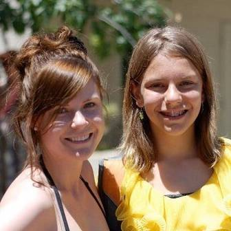
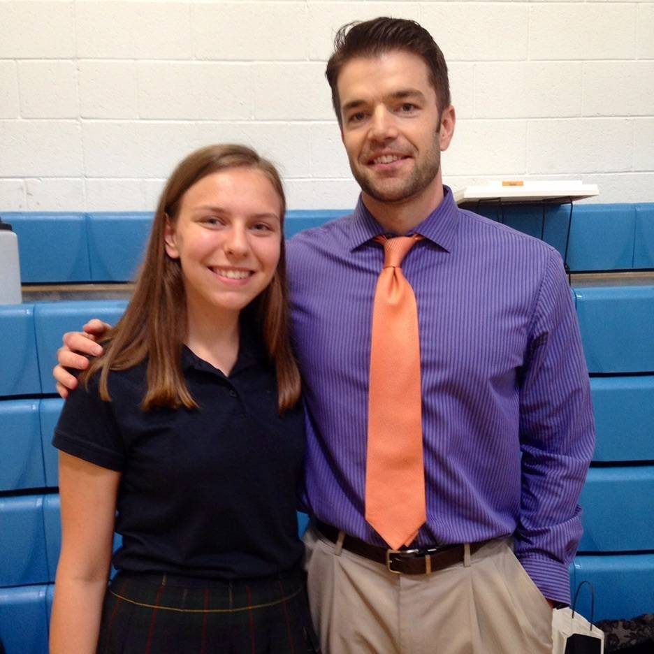
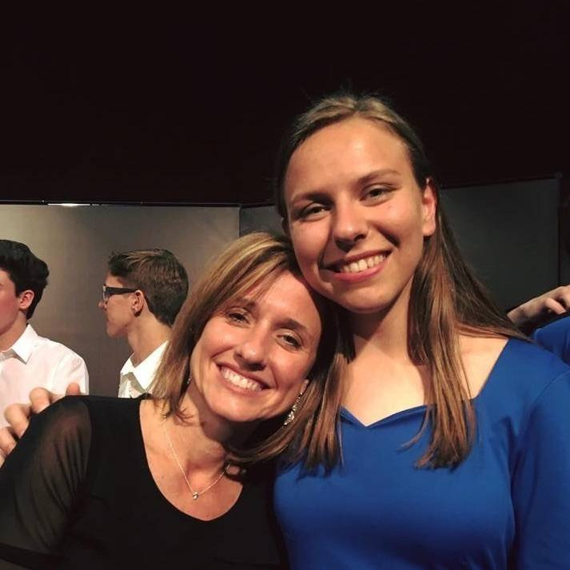
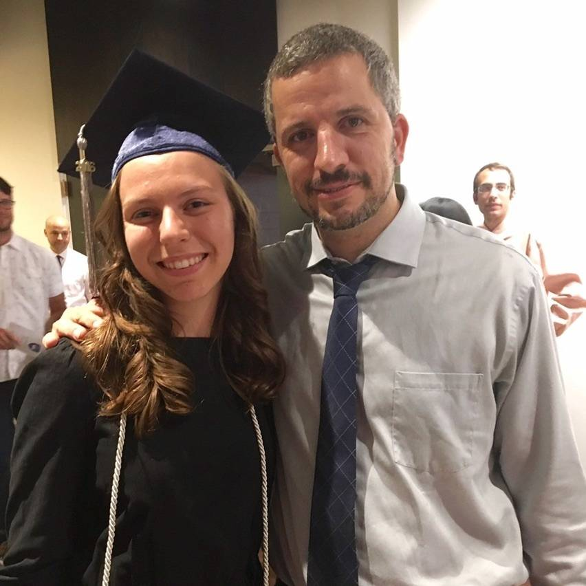
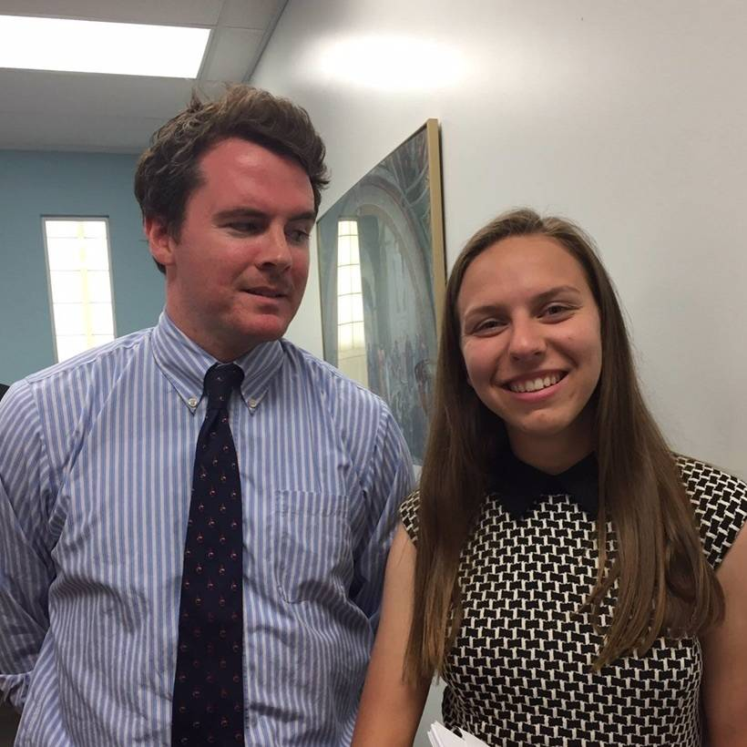

Thank You Teachers
@imc graduates high school this week. She has had a long run of truly great teachers. I’m sure I’m leaving off a few that belong here.
-
Kindergarten: Miss Mason.
Sometimes I think a good chunk of her academic success comes down to her awesome introduction to school. Miss Mason was enthusiastic, fun, firm, hilarious, utterly in control of 25 five year olds, and just infectiously wonderfully kind. We truly loved her.
-
First Grade: Mrs. Gust and Miss Trasinsky
Isabel loved this classroom and especially all the books that were made available to her. These team-teachers divided responsibilities and they were so professional and competent at parent conferences it made me feel like she was in a great place.
-
Second Grade: Miss Finnegan
We moved to a new neighborhood and a new school and Isabel made the transition beautifully in no small part due to Miss Finnegan's warm loving style.
-
Third Grade: Mr. Block (Music)
Isabel loved soft spoken Mr. Block with his warm smile and his classroom full to the brim with assorted musical instruments. He was the first to recommend Isabel find and join and extracurricular choir. She has been in choirs of one kind or another ever since and she truly loves it.
-
Third Grade: Mrs. LaBrie
Mrs. LaBrie came to Isabel's extracurricular choir concert to show her support. I remember being so surprised that she would make that effort. She also inspired Isabel to pay more attention to math. Unfortunately other circumstances got messy at this school and we decided to move her to a new school for fourth grade.
-
Fourth Grade: Mrs. Jaswant
I will always and forever hold Jaswant in the highest esteem for her compassion and commitment to educating children, her refreshing directness in dealing with parents, and her deep deep competence. She was demanding and Isabel loved it. Isabel also took to her new school, a Montessori school, like a fish to water. This school was a great gift to my family.
-
Fifth and Sixth Grade: Miss Lindsey
This was Miss Lindsey's first year teaching after completing her education at Berkeley and her Montessori training. Obviously we were a little concerned about a dip in quality but it was misplaced. Lindsey became something of a hero to Isabel. She was brilliant, well equipped to teach, academically gifted, softspoken, and she had hair that went from green to blue to pink (and sometimes mixed) throughout the year. Isabel still talks to her periodically. Miss Lindsey is a family treasure.
-

Fifth and Sixth Grade: Miss M
This school always had assistant teachers in every classroom. Miss M was the 4/5/6 assistant all the way through Isabel and Sophia's years. She and Isabel bonded over their love of reading. Later Sophia would bond with her over acting and improv.
-
Middle School: Mr. Pagani (Latin)
Isabel started a new school in 7th grade, and stayed there through high school. She and Mr. Pagani had a rough patch in the middle but things started off great in seventh grade Latin 1 and ended great in senior year Greek 2. Mr. Pagani is an uber-nerd who recites Latin and Greek like a Shakespearean actor and truly deeply loves his subject.
-
Middle School: Mrs. Joyner (Latin 2)
Isabel loved Mrs. Joyner. Everybody loves Mrs. Joyner. She was loud, excited, determined, intense, and just exuded smartness. She was also stylish. Isabel found out she loved creme brûlée so she asked me to help her make one for Mrs. Joyner. She also painted her a little dish to make it in that said "Et tu brûlée" in the bottom. (What can I say, may baby's a nerd). Mrs. Joyner LOVED it and laughed and laughed about it. She was just one of those people you immediately like and pay attention to.
-
Middle School: Miss Koci (Music)
I maybe had a little crush on Miss Koci. She was just so smart and so funny and so warm. And a little sarcastic. Isabel loved her too as she introduced her to a more formal approach to singing including music theory and study of music in many forms.
-
Middle School: Mrs. Stork (Literature)
Miss Stork was studious, demanding, kind, and full of love for literature. In other words, Isabel adored her.
-
High School: Mr. Patak (Geometry)
Small soft spoken Mr. Patak taught Geometry as though it were the most beautiful of the liberal arts. (I happen to agree that classical geometry is staggeringly beautiful so I liked him right away.) At a time when Isabel was starting to resent math classes, he really opened her eyes, encouraged her, and gave her a super-positive year of learning. He was a gem.
-

High School: Mr. Hjelmberg (Humane Letters)
Isabel still has a crush on this nerdy, brilliant, handsome man. I still remember the lesson he taught the parents at "curriculum night" as really fascinating, fun, and insightful. He left the school her sophomore year but they're still in touch.
-
High School: Mr. Sullivan (Latin)
Mr. Sullivan is the grandfather of the school and after five seconds in his classroom it is obvious he is a super-competent and likable teacher. He is one of those crazy people who quits a lucrative career (corporate law in his case) late in life to become a teacher. My favorite thing about Mr. Sullivan is how much he encouraged Isabel to stop worrying about grades, stop stressing about school, and enjoy learning and life every day.
-
High School: Mr. Coaloa (Humane Letters)
Isabel always loved her Humane Letters teachers. She gets to spend a two hour double period every day discussing literature and history with a class full of smart kids and a smart teacher. It is so much her thing. Mr. Coaloa and his wife Miss Tucker (see below) moved to flagstaff and Isabel has visited with them twice.
-
High School: Miss Tucker (Drama)
Miss Tucker took an interest in Isabel a year or two before she actually had her in class. She encouraged Isabel's poetry, helped her form poetry club, and just all around gave her tons of love and support. She also directed Isabel as Conrad in Much Ado About Nothing. I think they'll be life long friends.
-

High School: Mrs. Rathsburg (Music)
I listed about Mrs. Rathsburg's beautiful tribute to Isabel last week. https://li.st/l/4dxr7V7UjXbKZG5WhYIx6s She is a tiny powerhouse of energy, brilliance, and kindness. Isabel admires her so much.
-

High School: Mr. Dickerson (Humane Letters)
Tweedy sardonic unpretentious Mr. Dickerson finishes out Isabel's four years of Humane Letters coaching her through (among many others) the difficult Brothers Karamazov. I don't know if she knows it but he loves Isabel and always makes a point to tell us.
-
High School: Mr. Ward (Physics)
Mr. Ward is a fan favorite at Isabel's school. He's tiny and dorky and he knows it so he plays it up with theatrical flair, wearing sweater vests and drinking chocolate milk through a straw. Mr. Ward perfectly walks the line between irreverent funny approachability and the highest academic standards. He demands a lot from his students and he gets it because they all love him.
-

High School: Mr. Sifert (Thesis Advisor)
Smart, sarcastic, demanding, and complimentary. Mr. Sifert was a great advisor for Isabel's Senior Thesis. He pushed and pushed and gave her tons of advice and direction. And he was funny and encouraging all the way through.